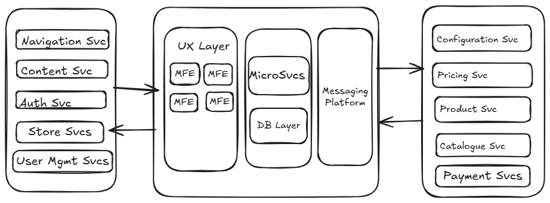

Senior Engineering Manager • Scalable Systems • AI‑Driven Platforms
Engineering Leader with 20+ years leading global engineering teams, scaling high‑traffic digital commerce platforms, and
delivering mission‑critical software with predictable execution and operational excellence. Combines strong people leadership with
hands‑on technical depth in distributed systems, cloud-native architectures, and high‑scale backend engineering. Known for building
high‑performing teams, modernizing legacy systems, and driving engineering culture grounded in ownership, quality, and continuous
improvement.
Portfolio Overview
Leadership Highlights
Hybrid engineering leader with 22 years of experience blending strategic direction, hands‑on architecture, and people development.
19‑year journey at Dell shaping global commerce platforms used by millions of customers across 100+ countries.
Built, transformed, and mentored multiple high‑performing engineering teams across India and the US, fostering ownership, technical depth, and delivery excellence.
Architected and modernized complex systems into modular, cloud‑ready services with measurable gains in performance, reliability, and maintainability.
Delivered mission‑critical programs contributing to a $40B+ annual revenue pipeline, maintaining 99%+ availability during global peak events.
Deep domain expertise in e‑commerce, commercial platforms, checkout flows, DFS/OFA systems, and PCI‑compliant architectures.
Known for creating clarity in complex environments, driving cross‑functional alignment, and enabling teams to deliver high‑quality, customer‑centric outcomes.
Dell Technologies — Senior Engineering Manager
19 years at Dell, including 7 years in senior leadership roles, driving engineering transformation across global commerce platforms. Based in Bangalore, leading cross‑functional teams across India and the US.
Leadership Scope
Built and mentored multiple feature teams across divergent technologies and product domains.
Transformed support teams into full‑stack engineering squads delivering high‑value releases.
Led Premier Site modernization, improving speed, stability, and customer experience.
Co‑led India hackathon for Buyer Group, fostering innovation and cross‑team collaboration.
Groomed engineers into leadership roles, enabling career growth and technical ownership.
Architecture & Delivery
Architected and delivered multiple successful programs in the commercial space.
Maintained zero defect leakage to production across UX applications over multiple years.
Led PCI‑compliant development for Dell Financial Services (DFS) domain, becoming SME for Online Finance Application (OFA).
Modernized legacy systems into modular, scalable services aligned with Dell’s FY20/21 roadmap.
Strategic Impact
Delivered complex, high‑budget programs involving cross‑org dependencies across Dell’s global teams.
Improved delivery velocity and quality through process optimization and policy refinement.
Built strong stakeholder relationships across product, UX, and interlock teams.
Enabled smoother delivery through deep organizational knowledge and cross‑team trust.
Site Leadership
Served as technical site leader for RO/OLR in India, driving engineering excellence and team culture.
Provided mentorship and strategic direction across multiple programs and product lines.
Architecture Diagram

MPesa Payment Orchestration Case Study
Context
MPesa is one of Africa’s largest mobile money platforms. The goal was to integrate MPesa’s
STK Push flow into a global e‑commerce payment stack with strict reliability and security requirements.
Problem
MPesa uses asynchronous callbacks, requiring a reliable orchestration layer to track transaction state.
Network instability and callback delays could lead to inconsistent payment states.
Multiple tenants needed isolated credentials and routing logic.
High‑scale traffic demanded idempotent workflows and retry‑safe processing.
Architecture Overview
Microservice-based payment stack with separate services for payment initiation, MPesa integration, and callback processing.